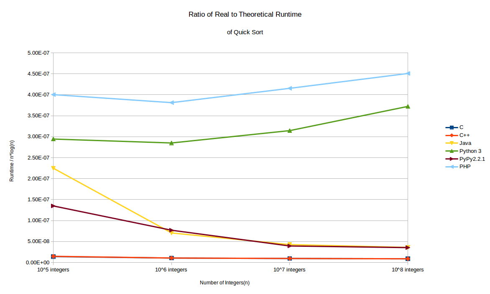

Scaling of applications is a common problem that many programmers have to deal with. Just because a solution works on a given input; doesn't mean it's going to work,with satisfactory performance, for input of any size. The same algorithm that sorts 100 integers quickly, might scale so badly that if given a 1,000,000 integers it might be so slow that it would become practically useless, or at least a big drawback to the application it's used in. Given this fact, one has to be aware on what scale their algorithms and programs will be used.
For example, consider the following function, which implements an algorithm from the book Algorithms1, for calculating the nth Fibbonacci's number(using Python):
def fib1(n):
if n == 0:
return 0
if n == 1:
return 1
return fib1(n - 1) + fib1(n - 2)
This algorithm does the job but it has two recursive invocations for every n > 2, this is really going to stack up as n gets large, and the runtime of the algorithm will grow exponentially. To show this experimentally, the function was executed and timed for the 10th, 20th, 30th, and 40th Fibonacci numbers. This was done with a script2 using the python timeit module. Each case was carried out 5 times and the average was taken, see the table below:
| Seconds taken to find the nth Fibonacci number | ||||
|---|---|---|---|---|
| Algorithm | n = 10 | n = 20 | n = 30 | n = 40 |
| fib1 | 0.0 | 0.0023 | 0.2874 | 35.33 |
The algorithm is so inefficient that practically, it can only be used for very small numbers of n. Thankfully there are more efficient solutions such as the one below:
def fib2(n):
if n == 0:
return 0
a, b = 0, 1
for _ in range(2, n + 1):
a, b = b, a + b
return b
Here, the obvious improvement is that the function actually stores the two previous values, so there is no need to recursively find every value below n, which is a massive performance benefit. With this algorithm it is possible to calculate values that would take years with the previous one to compute. See below the results of the same test as before, except with fib2 and much larger input:
| Seconds taken to find the nth Fibonacci number | ||||
|---|---|---|---|---|
| Algorithm | n = 10,000 | n = 20,000 | n = 30,000 | n = 40,000 |
| fib2 | 0.0018 | 0.0057 | 0.0112 | 0.0187 |
It's obvious that the second algorithm is on a completely different level, it would be meaningless to even try to compute the values in the second table with the first algorithm.
Even an example as trivial as this illustrates the significance of knowing how an algorithm scales, as it places limits on how an algorithm can be used. Python was chosen for this test, because it natively supports arbitrarily large numbers so the algorithm would produce genuine results. It should be noted that this has a drawback, since for significantly larger values of n the result will get so large that storing the variables in the function will actually slow down the whole process.
Another of many cases where scaling is relevant is the experiment in my previous article about using the Quicksort algorithm to compare different languages(C3, C++4, Java5, Python 36, Python with PyPy6, Jython6, and PHP7). This comparison can now be taken a step further, by examining how well the different languages scale. The average case complexity of quicksort is: O(n * log(n)), this means the theoretical runtime of the algorithm given n integers is n*log(n). Knowing this, it is possible to take the data from the test that was performed in the last article, and compare the run-times of each language with the theoretical runtime obtained by the equation for the complexity. This will give deeper insight into the performance of each language, as opposed to just observing the runtime itself.
Below is a graph showing the theoretical runtime (n*log(n)) divided by the actual runtime:

Jython was omitted from this graph as it's performance is so bad that it would skew the graph and make the other results hardly readable.
The curves on this graph could loosely be classified into three groups. The first is the compiled languages, the group that contains C, and C++. These languages perform very well and their ratio of runtime to theoretical runtime, decreases very slightly with more integers, but compared to the others it seems almost constant. The second group(PyPy and Java) start off with a much higher ratio, but as the number of integers increases the graphs for both of these decrease quickly. In the final group are the interpreters, which perform badly to start with, however unlike the rest they actually get worse as the input grows.
In these results what is particularly noteworthy is the way the graphs of PyPy and Java sharply decrease, whereas the other languages get worse and C/C++ decrease very slowly, if at all. The reason for this, is that PyPy and Java both use JIT(Just In Time) compilation, as mentioned last time. JIT is a kind of compilation that occurs at run time, as the program is running the JIT compiler will compile and optimize parts of the code when they are needed by the running program. So in the beginning PyPy and Java don't perform so well, as the number of integers is small and there is barely any time for JIT to make any difference, but as the number of integers increases the JIT compilation kicks in and this leads to a dramatic performance improvement. Consequently this can be seen in the graphs, of course it still doesn't make them as fast as C/C++ which compile everything to machine code in the beginning, but it makes them scale very well, note the difference between PyPy and CPython 3.
This test demonstrates that there are not only differences in how algorithms scale, but even languages themselves. Therefore it can also play a role in deciding which language to use, as a particular language might scale badly for a large number of input. The aim of this article is to illustrate that it's best to make pragmatic choices about which language and/or algorithm to use. This is of course not to say that only the best scaling solution should be chosen all the time, rather the one that best meets the needs of the designer. For example if a programmer uses quick sort and knows the input will never exceed 10,000 then they don't need to worry how the implementation scales beyond that, and may focus on other considerations such as ease of implementation, etc. The point is one needs to be aware of how they need their application to scale, since this will help determine which kinds of solutions are suitable. As per the Quick Sort example, if you want to sort 1000 integers it's fine to use PHP, but if you want to sort 100 million, and not wait for half an hour, you should probably use a compiled/JIT language. Being aware of this can save a developer a lot of work later, as they won't find in the middle of a project that it must be rewritten, because it performs poorly on a scale not previously tested.
Footnotes
1:Dasgupta, Sanjoy, Christos H. Papadimitriou, and Umesh Virkumar. Vazirani. "Enter Fibonacci." Algorithms. Boston: McGraw-Hill Higher Education, 2008. 2-4. Print. ↩
2:Script used to time fibonacci functions: https://github.com/Filip-Ter/qmcs.articles.res/blob/master/018-scaling/TimeFib.py ↩
3: My C implementation of Quicksort (compiled with gcc): https://github.com/Filip-Ter/QSortTest/blob/master/cmplang/src/QsortC.c ↩
4: My C++ Quicksort implementation (compiled with g++): https://github.com/Filip-Ter/QSortTest/blob/master/cmplang/src//Qsort.cc ↩
5: My Java Quicksort implementation, complied and executed with jdk 7u51: https://github.com/Filip-Ter/QSortTest/blob/master/cmplang/src/Qsort.java ↩
6: My Python Quicksort implementation, the same source file was used for Python 3.3.4, PyPy, and Jython: https://github.com/Filip-Ter/QSortTest/blob/master/cmplang/src/Qsort.py ↩
7: My PHP Quicksort implementation: https://github.com/Filip-Ter/QSortTest/blob/master/cmplang/src/Qsort.php ↩